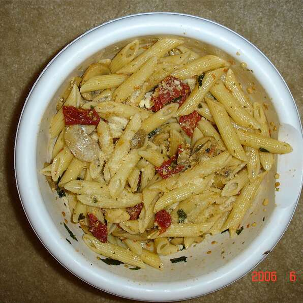

homemade garlic penne pasta dish, recipie by Chantal Rogers, photo by Molle888, both from allrecipes
Description
This recipe is so easy to make, tastes great and is a big hit at dinner time. It's even a hit as leftovers! It uses simple ingredients that you always have on hand and you can replace the penne with any pasta you want.
Ingredients
8 ounces penne pasta (half a package)
1/4 cup olive oil
3 cloves garlic, chopped
8 sun-dried tomatoes, chopped
1 tablespoon dried parsely
1 tablespoon crushed red paper flakes
1/2 teaspoon black pepper
1/4 greated Paresan cheese
Steps
Bring a large pot of lightly salted water to a boil. Add pasta and cook for 8 to 10 minutes or until al dente. Drain, and return to pot.
Heat 1 tablespoon olive oil in a skillet over medium heat. Saute garlic, sun-dried tomatoes and parsley for about 1 minute. Season with red pepper flakes and black pepper. Stir into cooked pasta, along with remaining olive oil. Top with Parmesan.